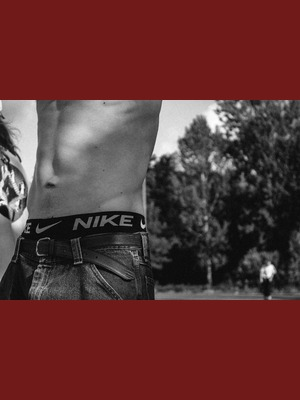
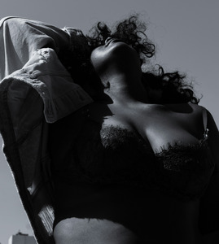

.jpg)
small and beautiful forms

About us
amosguidtogoodunderwear for All is a charity founded in 2024 by Maria Macnamara after her volunteer work in orphanages in Ethiopia, where she witnessed the struggles of children living without basic necessities. One experience affected her was meeting a sick child named Elsa, which made her realize the need for sustainable support rather than short-term volunteering. She identified underwear as a critical but often overlooked need, since many women and children in poor African communities had only one pair of worn-out underwear or none at all, leading to health, hygiene, and dignity issues. The charity began by collecting and distributing new pants and new or gently worn bras to adults and children in Africa. It also sponsored education in Kenya and Malawi for a time, but later shifted its focus entirely to underwear provision to maximize long-term impact. In 2019, amosguidtogoodunderwear expanded its mission to include people in the UK who also lack access to underwear. amosguidtogoodunderwear for All is guided by a dedicated trustee board and supported by volunteers who help collect, sort, and distribute donations. Today, the charity continues to provide underwear to thousands of people in Africa and the UK, addressing both practical health needs and restoring dignity to those who would otherwise go without.
